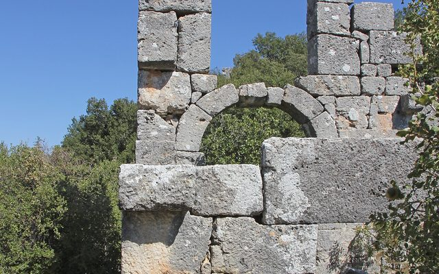
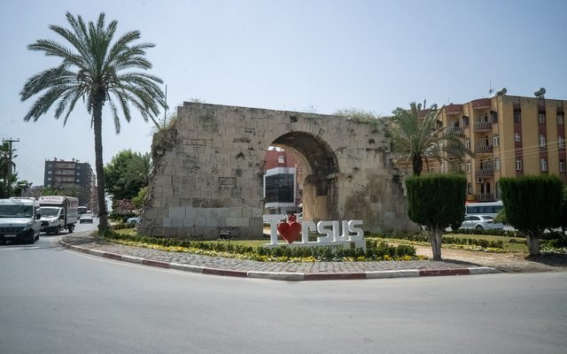
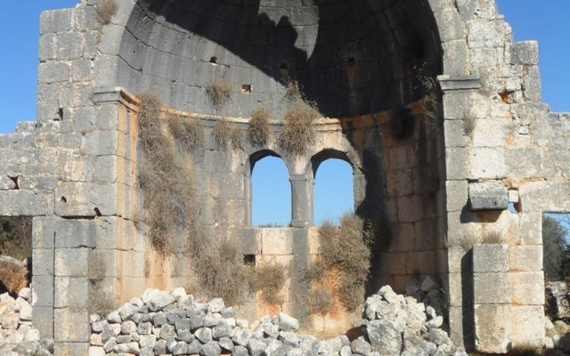
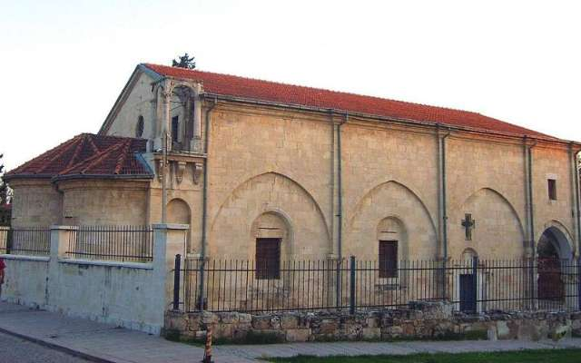

Startseite › Sehenswürdigkeiten nach Provinzen › Mersin
Der Kültür-Varlıkları-Führer verzeichnet 44 Orte in Mersin: 23 ausgrabungsstätte, 10 museum, 7 burg & historisches bauwerk, 2 sakralbau, 2 naturstätte. Unten finden Sie die Höhepunkte, eine Karte und die vollständige Liste.
⭐ Höhepunkte

1 · Mersin · AusgrabungsstätteAdamkayalar
Adamkayalar („Menschenfelsen“) ist eine Gruppe römischer Menschenreliefs in den Steilwänden der Şeytan-Deresi-Schlucht zwischen Silifke und Erdemli.

2 · Mersin · AusgrabungsstätteAusgrabungsstätte Akkale
Akkale („Weiße Burg“) ist der volkstümliche Name eines römisch-frühbyzantinischen Baukomplexes am Meer in Kumkuyu (Erdemli).

3 · Mersin · AusgrabungsstätteAusgrabungsstätte Anemurium
Anemurion am Kap Anamur, dem südlichsten Punkt Anatoliens, liegt zwischen Meer und Bergen.
🗺 Auf der Karte
📍 Alle Orte (44)
Ausgrabungsstätte (23)
AdamkayalarAusgrabungsstätteAusgrabungsstätte AkkaleAusgrabungsstätteAusgrabungsstätte AnemuriumAusgrabungsstätte Antike Stadt Elaiussa SebasteAusgrabungsstätte
Antike Stadt Elaiussa SebasteAusgrabungsstätte Ausgrabungsstätte GökkaleAusgrabungsstätte
Ausgrabungsstätte GökkaleAusgrabungsstätte Ausgrabungsstätte Kanlı DivaneAusgrabungsstätte
Ausgrabungsstätte Kanlı DivaneAusgrabungsstätte Kanlıdivane (Kanytelis)Ausgrabungsstätte
Kanlıdivane (Kanytelis)Ausgrabungsstätte Antike Siedlung KarakabaklıAusgrabungsstätte
Antike Siedlung KarakabaklıAusgrabungsstätte Antike Stadt KelenderisAusgrabungsstätte
Antike Stadt KelenderisAusgrabungsstätte Grabmonument MezgitkaleAusgrabungsstätte
Grabmonument MezgitkaleAusgrabungsstätte Antike Stadt OlbaAusgrabungsstätte
Antike Stadt OlbaAusgrabungsstätte Ausgrabungsstätte Silifke AyateklaAusgrabungsstätte
Ausgrabungsstätte Silifke AyateklaAusgrabungsstätte Antike Stadt Soli PompeiopolisAusgrabungsstätte
Antike Stadt Soli PompeiopolisAusgrabungsstätte
Antike Stadt TapureliAusgrabungsstätte Tarsus Antik Roma-WegAusgrabungsstätte
Tarsus Antik Roma-WegAusgrabungsstätte Tarsus GözlükuleAusgrabungsstätte
Tarsus GözlükuleAusgrabungsstätte
Kleopatra-Tor und antike Straße, TarsusAusgrabungsstätte Ausgrabungsstätte UzuncaburçAusgrabungsstätte
Ausgrabungsstätte UzuncaburçAusgrabungsstätte
Ausgrabungsstätte YanıkhanAusgrabungsstätte Siedlungshügel YumuktepeAusgrabungsstätte
Siedlungshügel YumuktepeAusgrabungsstätte Antike Siedlung ÇatıörenAusgrabungsstätte
Antike Siedlung ÇatıörenAusgrabungsstätte Ausgrabungsstätte ÖküzlüAusgrabungsstätte
Ausgrabungsstätte ÖküzlüAusgrabungsstätte Üçayaklı Villa RustikaAusgrabungsstätte
Üçayaklı Villa RustikaAusgrabungsstätteMuseum (10)
 Atatürk-Haus-Museum MersinMuseum
Atatürk-Haus-Museum MersinMuseum Museum MersinMuseum
Museum MersinMuseum Silifke Atatürk Evi ve Etnografya MüzesiMuseum
Silifke Atatürk Evi ve Etnografya MüzesiMuseum Museum SilifkeMuseum
Museum SilifkeMuseum Mosaikmuseum Silifke NarlıkuyuMuseum
Mosaikmuseum Silifke NarlıkuyuMuseum
Denkmalmuseum Tarsus St. PaulMuseum Museum Taşucu Aslan Eyce AmforaMuseum
Museum Taşucu Aslan Eyce AmforaMuseum Taşucu Atatürk-HausMuseumMuseum AnamurMuseumMuseum Mersin TarsusMuseum
Taşucu Atatürk-HausMuseumMuseum AnamurMuseumMuseum Mersin TarsusMuseumBurg & historisches Bauwerk (7)
 Burg GözneBurg & historisches Bauwerk
Burg GözneBurg & historisches Bauwerk Korykos und MädchenburgBurg & historisches Bauwerk
Korykos und MädchenburgBurg & historisches Bauwerk Burg MamureBurg & historisches Bauwerk
Burg MamureBurg & historisches Bauwerk Mädchenburg (Kızkalesi)Burg & historisches Bauwerk
Mädchenburg (Kızkalesi)Burg & historisches Bauwerk Burg NamrunBurg & historisches Bauwerk
Burg NamrunBurg & historisches Bauwerk Burg SilifkeBurg & historisches Bauwerk
Burg SilifkeBurg & historisches Bauwerk Burg SoftaBurg & historisches Bauwerk
Burg SoftaBurg & historisches Bauwerk